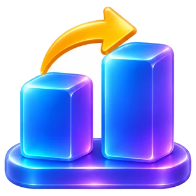
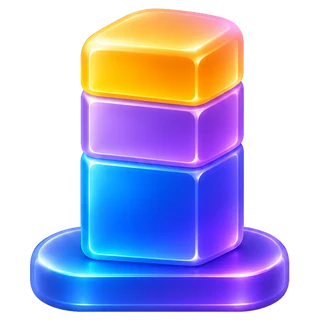
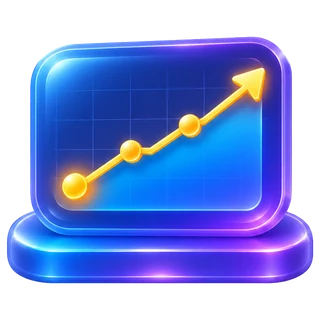

Finansal Yönetim Ödevi
Ödevde ne yapacağını sayfa sayfa anlatıyoruz.
Ödev bilgileri
- Son teslimSınavdan 1 gün önce
- Teslim şekliE-posta veya WhatsApp
- PuanVizeye ek puan
- Yapay zekâKullanılabilir
Ödevi yapmak notuna olumlu yansır, yapmamak olumsuz etkilemez.
Şirketini seç
kap.org.tr sitesine gir ve Borsa İstanbul'da işlem gören bir şirket seç.
KAP'ı açTabloları indir
Seçtiğin şirketin son 5 yıllık finansal tablolarını indir.
Karşılaştırma için her yılda yıllık (12 aylık) raporları kullan.
Tabloları temizle
Rakamları tek tabloda topla ve analize uygun hâle getir.
- Her kalem bir satırda olsun.
- Her yıl bir sütunda olsun.
- Yıllar eskiden yeniye sıralansın.

4. adımYatay analiz
Bir kalemin önceki yıla göre yüzde kaç değiştiğini bul.
Satışlar 180'den 210'a çıktıysa artış %16,7'dir.

5. adımDikey analiz
Bir kalemin aynı yıl içindeki payını bul. Bilançoda toplam varlıkları, gelir tablosunda net satışları temel al.
Net satışlar 210, brüt kâr 67 ise pay %31,9'dur.

6. adımTrend analizi
İlk yılı baz yıl al ve 100 kabul et. Diğer yılları buna göre hesapla.
Baz yılda 100 olan satışlar 210 olduysa trend değeri 210'dur.
Takılmamak için
- Şirket seçimiBanka ve sigorta şirketlerinin tabloları farklı olduğu için analiz daha zor olabilir.
- Rapor türüHer yıl için aynı türde raporu kullan.
- Enflasyon2023 sonrası tablolar enflasyona göre düzeltilmiş olabilir. Eski yıllarla karşılaştırırken raporun açıklamasına bak.
Hazır komut
Tablolarını ekleyip bu komutu gönder. Sonuçları mutlaka kontrol et.
Ekteki finansal tablolar [ŞİRKET ADI] şirketinin son 5 yılına ait. Bir Finansal Yönetim ödevi için şunları yap: 1. Bilanço ve gelir tablosunu temizle. Rakamların hiçbirini değiştirme. 2. Yatay analiz yap: Her kalemin önceki yıla göre yüzde değişimini hesapla. 3. Dikey analiz yap: Bilançoda toplam varlıkları, gelir tablosunda net satışları 100 kabul et. 4. Trend analizi yap: İlk yılı baz yıl (100) kabul et. 5. Sonuçları formülleri görünecek şekilde Excel'de hazırla. Emin olmadığın rakam varsa tahmin etme, bana sor.
Ödevini teslim et
Ödevini sınavdan en geç 1 gün önce e-posta veya WhatsApp ile gönder.
Hocanın WhatsApp'ı Finansal Yönetim notlarına gitGüncel bilgi için dersin hocasının duyurusu esas alınır.